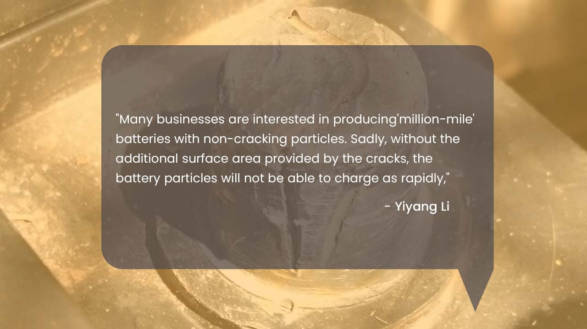
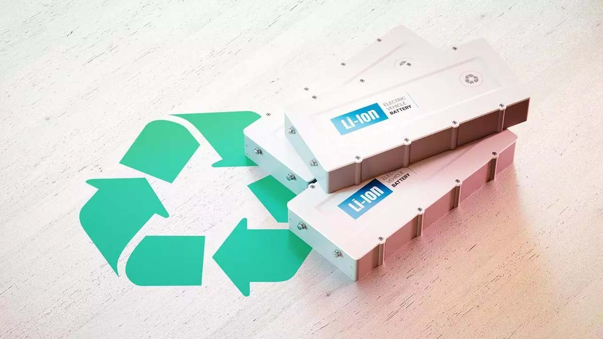

Many electric vehicle manufacturers prefer using crackless lithium-ion batteries for a longer life. The preference is made due to a pre-formed concept that says cracking shortens the lifespan of the battery.
A study published in Energy and Environmental Sciences by Yiyang Li, an assistant professor of materials science and engineering, contradicts the above view. "Many businesses are interested in producing'million-mile' batteries with non-cracking particles. Sadly, without the additional surface area provided by the cracks, the battery particles will not be able to charge as rapidly," said Yiyang Li, an assistant professor of materials science and engineering and the study's corresponding author.

The team suggests that the discovered insights apply to over half of electric vehicle batteries. These batteries typically feature a positive electrode, or cathode, consisting of trillions of microscopic particles, either lithium nickel manganese cobalt oxide or lithium nickel cobalt aluminum oxide.
Theoretically, the charging speed of the cathode is determined by the surface-to-volume ratio of these particles. Smaller particles, with a higher surface area relative to volume, are expected to charge faster than larger particles, as the lithium ions have shorter distances to diffuse through them.
Nevertheless, the charging characteristics of individual cathode particles could only be determined by averaging the values of all the particles that comprise the cathode of the battery using conventional methods. Because of this restriction, the generally acknowledged correlation between cathode particle size and charging speed was only a theory.
According to a study, the cathode particles are cracked and have more active surfaces to take in lithium ions—not just on their outer surface, but inside the particle cracks. Battery scientists know that cracking occurs but have not measured how such cracking affects the charging speed.
Understanding the advantages of cathode cracking hinged on measuring the charging speed of individual cathode particles, a feat accomplished by utilizing a device commonly employed by neuroscientists to explore the transmission of electrical signals among individual brain cells.

The experimental setup involved a specialized 2-by-2 centimeter chip featuring up to 100 microelectrodes. With precision, a needle approximately 70 times thinner than a human hair was used by the researchers to transfer individual cathode particles onto specific electrodes of the array, strategically scattering some of the particles in the chip's center. Subsequently, the researchers were able to charge and discharge up to four different particles simultaneously on the array. In this particular study, a total of 21 particles were measured.
Contrary to expectations, the experiment's results revealed that the size of the cathode particles did not influence their charging speed. Li and Min propose that this unexpected behavior may be attributed to the larger particles behaving akin to a group of smaller particles during their cracking process.
Another plausible explanation could be the rapid movement of lithium ions in the confined spaces between the nanoscale crystals forming the cathode particle, referred to as grain boundaries. Li suggests this scenario is unlikely unless the electrolyte—the liquid medium facilitating the movement of lithium ions in the battery—breaks through these barriers and forms cracks.
When designing long-lasting batteries with single-crystal particles that don't crack, it's crucial to take into account the advantages of cracked materials. These particles might have to be smaller than the cracking cathode particles of today in order to charge rapidly. Making single-crystal cathodes with alternative materials that can transport lithium more quickly is an option, but a study showed that those materials might be less energy-dense or have a restricted supply of essential metals.